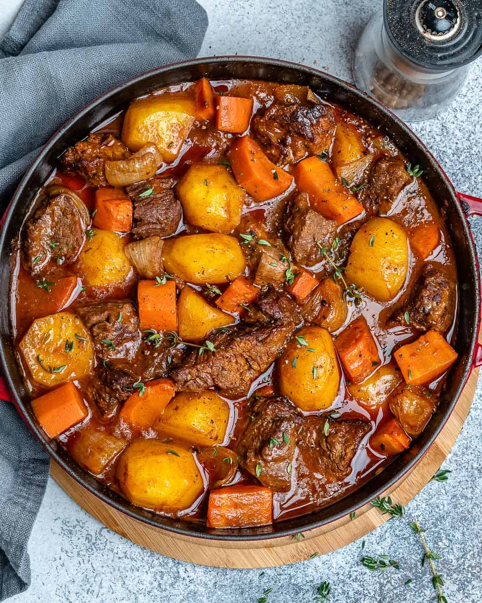

Beef Stew
This Classic Homemade Beef Stew recipe is so easy to make and so heavenly. A one-pot meal that’s hearty, flavorful and loaded with tender beef morsels, potatoes, and carrots. Cooked in a rich and savory sauce, this beef stew recipe is comfort food at its best.
This simple and healthy beef stew recipe can easily be made in an instant pot, slow cooker, in the oven, or on a stovetop. We will be showing you the different ways to cook up this delicious homemade beef stew so you can make it whichever way is more convenient. Enjoy tender, melt in your mouth beef chunks with soft comforting potatoes and carrots. We assure you that this will be the best beef stew recipe you will ever have!
Ingredients
- 2 lbs Beef Chuck Roast
- 1 Tsp Kosher Salt
- ½ Tsp Coarsely Ground Black Pepper
- 2 Tbsp Gluten-free All-Purpose Flour
- 2 Tbsp Olive Oil
- ½ Yellow Onion
- 4 Garlic Cloves
- 1 Large Carrot
- 2 Cups Beef Broth/li>
- ¼ Cup Tomato Paste
- 1 Tbsp Worcestershire Sauce
- 1 Bay Leaves
- 2 Tsp Fresh Thyme Leaves
Instructions
- Preheat oven to 325° F
- Season the beef chunks on all sides with salt and pepper. Sprinkle the flour over and toss the seasoned beef to coat it on all sides
- Heat the olive oil in a large Dutch oven over medium heat. Brown the beef in batches, on all sides, for 3-4 minutes per batch. Don’t worry about cooking the beef all the way through at this stage. Transfer the browned beef to a plate and set aside
- Add the onions, garlic, and carrots to the Dutch oven, and cook, stirring occasionally, for 2-3 minutes, or until slightly browned.
- Add the potatoes, beef broth, tomato paste, bay leaf, thyme, and Worcestershire sauce, and use a wooden spoon to scrape the browned bits from the bottom of the pot.
- Bring the mixture to a simmer, stirring, and return the beef to the pot. Cover the Dutch oven, and transfer to the preheated oven
- Cook the stew for 2-2.5 hours, or until the beef is very tender. Remove the bay leaf. Taste the stew and season with additional salt and pepper, if necessary. Serve warm.